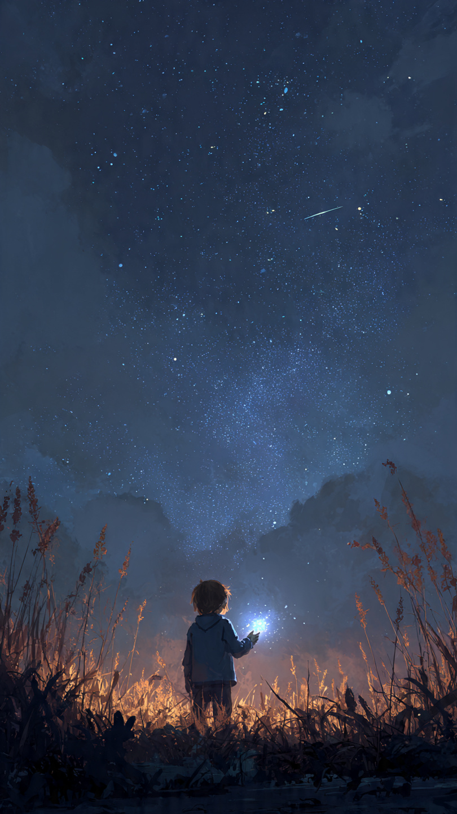
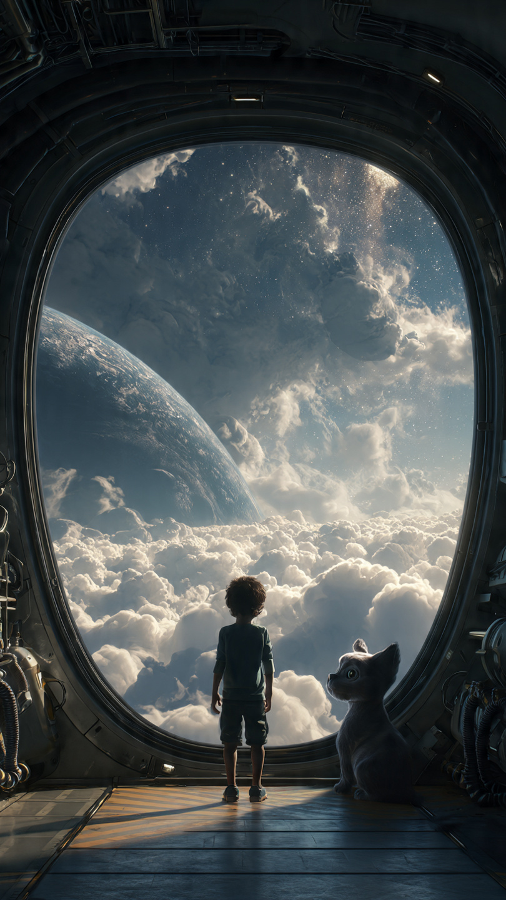

في قرية صغيرة بعيدة عن المدن الكبيرة، كان يعيش فتى يُدعى مالك.
لم يكن مالك عالمًا أو رائد فضاء.
كان مجرد فتى يحب النظر إلى السماء كل ليلة، ويتساءل دائمًا:
هل نحن وحدنا في هذا الكون؟
كان يحتفظ بدفتر صغير يرسم فيه النجوم، ويكتب بجانبها قصصًا عن عوالم لا يعرف أحد بوجودها.
وكان أصدقاؤه يضحكون عليه ويقولون:
"أنت تبحث عن أشياء لن تجدها أبدًا."
لكنه كان يجيب دائمًا:
"ربما الأشياء التي لا نبحث عنها هي التي تجدنا."
في إحدى الليالي، وبينما كان مالك يجلس فوق تلة قريبة من منزله، رأى شيئًا غريبًا في السماء.
لم يكن نجمًا.
ولا طائرة.
كان جسمًا صغيرًا يلمع بلون أزرق، يتحرك بسرعة ثم يسقط خلف الجبل.
شعر مالك بالفضول.
فأخذ مصباحه وذهب نحو المكان.
بعد رحلة قصيرة، وجد حفرة صغيرة في الأرض.
وفي وسطها كان هناك جسم معدني غريب.
لم يكن يشبه أي شيء صنعه البشر.
كان بحجم الكتاب تقريبًا، وعليه رموز دقيقة تتحرك مثل الضوء.
اقترب مالك ولمسه.
وفجأة...
انفتح الجسم وحده.
وخرج منه صوت هادئ:
"تم العثور على المستقبل."
تراجع مالك بخوف.
لكن الجسم لم يؤذه.
بل ظهرت أمامه صورة ثلاثية الأبعاد لكائن يشبه البشر، لكنه يرتدي ملابس مصنوعة من مادة مضيئة.
قال الكائن:
"إذا وصلت إليك هذه الرسالة..."
"فقد فشلنا في حماية طريق النجوم."
بدأت تظهر صور لكواكب بعيدة.
مدن ضخمة بين النجوم.
وسفن تسافر بين المجرات.
ثم ظهرت صورة لكوكب أزرق يشبه الأرض.
قال الكائن:
"نحن من حضارة أوريون."
"عشنا بين النجوم آلاف السنين."
"لكن شيئًا يقترب..."
تغيرت الصورة.
ظهر جسم أسود ضخم يتحرك بين الكواكب.
لا يشبه سفينة.
ولا كوكبًا.
كان شيئًا لا يعرفه البشر.
قال الكائن بصوت ضعيف:
"إنه يأكل طاقة العوالم."
"وقد أصبح قريبًا منكم."
ثم توقفت الرسالة للحظة.
وظهرت جملة واحدة فقط:
"نحتاج إلى شخص يستطيع سماع الرسالة."
نظر مالك إلى الجهاز بدهشة.
ثم ظهر سؤال على الشاشة:
"هل ستساعدنا؟"
وفي نفس اللحظة...
بدأت السماء فوقه تضيء بطريقة لم يرها من قبل.
📷 الصورة رقم 1

وقف مالك تحت السماء المضيئة وهو لا يعرف ماذا يفعل.
كان يحمل الجهاز الغريب بين يديه، بينما كانت الرموز الزرقاء تتحرك عليه بسرعة.
لم يكن يتخيل أن تلك الليلة ستغير حياته بالكامل.
فهو لم يجد مجرد جسم سقط من السماء...
بل وجد رسالة من حضارة بعيدة تبحث عن شخص يسمعها.
ضغط مالك على الزر المضيء في الجهاز.
وفجأة ظهرت أمامه خريطة ضخمة للنجوم.
لم تكن مثل أي خريطة رآها من قبل.
كانت تظهر طرقًا بين الكواكب، وممرات ضوئية تمر بين المجرات.
قال صوت الحضارة:
"لقد اخترناك لأن عقلك يستطيع استقبال الرسالة دون أن يتأثر."
سأل مالك:
"لماذا أنا؟"
أجاب الصوت:
"لأننا بحثنا عن أشخاص كثيرين."
"لكن معظمهم رأى الجهاز كشيء يجب امتلاكه."
"أما أنت..."
"فأردت فقط أن تعرف الحقيقة."
ظهرت صورة لكوكب بعيد.
كان مليئًا بالمدن المضيئة، لكنه بدا فارغًا تمامًا.
قال الصوت:
"هذا هو موطننا."
"منذ سنوات، ظهر الكائن المسمى آكل الطاقة."
"لم يكن شريرًا في البداية."
"لكنه بدأ يمتص طاقة الكواكب حتى أصبحت العوالم تموت بسببه."
نظر مالك إلى الصور بدهشة.
ورأى كواكب كاملة فقدت نورها.
سأل:
"ولماذا لا توقفونه؟"
ساد الصمت للحظة.
ثم قال الصوت:
"لأن قوتنا لم تعد كافية."
"لقد أرسلنا رسائل إلى حضارات كثيرة..."
"لكن لم يصدقنا أحد."
فجأة اهتز الجهاز بعنف.
وتغيرت الخريطة.
ظهر جسم أسود ضخم بالقرب من النظام الشمسي.
توقف مالك عن الكلام.
فقد أدرك أن الأمر ليس مجرد قصة بعيدة.
الخطر أصبح قريبًا من الأرض.
قال الصوت بسرعة:
"مالك..."
"هناك شيء يجب أن تعرفه."
"الرسالة لم تُرسل بالصدفة."
"فالجهاز الذي وجدته ليس مجرد وسيلة اتصال."
ثم انفتح جزء جديد منه.
وظهر بداخله رمز يشبه قلبًا من الضوء.
تابع الصوت:
"هذا هو مفتاح النجوم."
"الشخص الذي يحمله يستطيع فتح الطريق بين العوالم."
"لكن استخدامه قد يغير مستقبل الكون كله."
نظر مالك إلى المفتاح.
ثم إلى السماء.
ولأول مرة شعر أن كل تلك الليالي التي قضاها في مراقبة النجوم لم تكن مجرد حلم.
كانت استعدادًا لهذه اللحظة.
لكن قبل أن يقرر...
ظهر ضوء هائل فوق القرية.
وعندما رفع رأسه...
رأى سفينة فضائية عملاقة تغطي جزءًا من السماء.
📷 الصورة رقم 2

وقف مالك ينظر إلى السفينة العملاقة التي غطت السماء.
لم يكن يحلم بما يراه.
كانت حقيقية.
أضواء غريبة تتحرك على سطحها، وأبواب ضخمة بدأت تفتح ببطء.
خرج منها مخلوق يشبه البشر، له عينان لامعتان وملابس مصنوعة من مادة فضية.
اقترب منه وقال:
"أخيرًا وجدناك."
لم يشعر مالك بالخوف هذه المرة.
بل شعر أنه كان ينتظر هذه اللحظة منذ زمن طويل.
سأل:
"هل أنت من حضارة أوريون؟"
أجاب الكائن:
"نعم."
"أنا القائد إيلان."
"وجئت لأخذ مفتاح النجوم قبل أن يصل إليه آكل الطاقة."
صعد مالك إلى السفينة.
ولأول مرة رأى الكون من بعيد.
رأى الأرض ككرة صغيرة زرقاء.
ورأى النجوم تتحرك حوله كأنها بحر من الضوء.
لكن الرحلة لم تكن للدهشة فقط.
كان عليهم الوصول إلى مركز المجرة قبل أن يصل الكائن إلى الأرض.
بعد عبور بوابة النجوم، وصلوا إلى عالم أوريون.
كان الكوكب مختلفًا تمامًا.
مدن معلقة في السماء.
أنهار من الضوء.
وأبراج تصل إلى الفضاء.
لكن خلف كل هذا الجمال...
كان هناك خوف.
فقد كان الجميع يعرف أن آكل الطاقة يقترب.
قاد إيلان مالك إلى غرفة قديمة تحت المدينة.
كانت تحتوي على آلاف الكتب والأجهزة.
قال:
"هنا اكتشف أجدادنا حقيقة الكائن."
"إنه لا يتغذى على الطاقة فقط."
"بل على الخوف والطمع."
نظر مالك بدهشة.
فقال إيلان:
"كلما خافت الحضارات وحاولت استخدام القوة ضده..."
"أصبح أقوى."
"لذلك لم نستطع هزيمته."
فهم مالك شيئًا مهمًا.
لم يكن المطلوب سلاحًا أقوى.
بل طريقة مختلفة.
استخدم مفتاح النجوم، وفتح قناة اتصال مع الكائن.
ظهر أمامهم جسم ضخم من الظلام.
كان أكبر من أي سفينة.
قال بصوت يهز الفضاء:
"لماذا تحاولون منعي؟"
أجاب مالك:
"لأنك تدمر العوالم."
قال الكائن:
"أنا لا أدمرها."
"أنا أبحث عن الطاقة التي فقدتها منذ ملايين السنين."
"لقد أصبحت آكلًا للطاقة لأنني نسيت كيف أعيش بدونها."
اكتشف مالك أن الكائن لم يكن عدوًا حقيقيًا.
بل كان مخلوقًا فقد طريقه.
فبدلًا من محاربته، استخدم مفتاح النجوم ليعيد إليه الطاقة الأصلية التي فقدها.
بدأ الظلام يختفي.
وتحول الكائن إلى شكل جديد من الضوء.
عاد السلام إلى النجوم.
وعادت حضارة أوريون إلى بناء عالمها من جديد.
أما مالك، فعاد إلى الأرض.
لكنه لم يعد يرى السماء كما كان يراها من قبل.
فقد عرف أن كل نجمة تحمل قصة.
وأن الكون ليس مكانًا مليئًا بالأسرار فقط...
بل مليء بالكائنات التي تبحث عن من يفهمها.
ومنذ ذلك اليوم، كلما نظر مالك إلى السماء، كان يرى ضوءًا صغيرًا يتحرك بين النجوم.
وكان يعرف...
أن أصدقاءه هناك ما زالوا يتذكرونه.